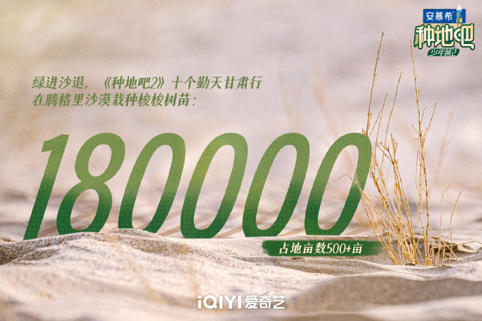
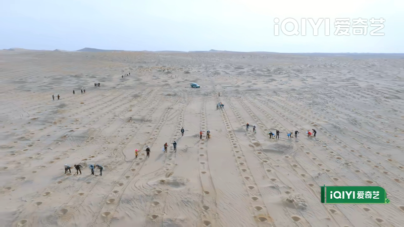
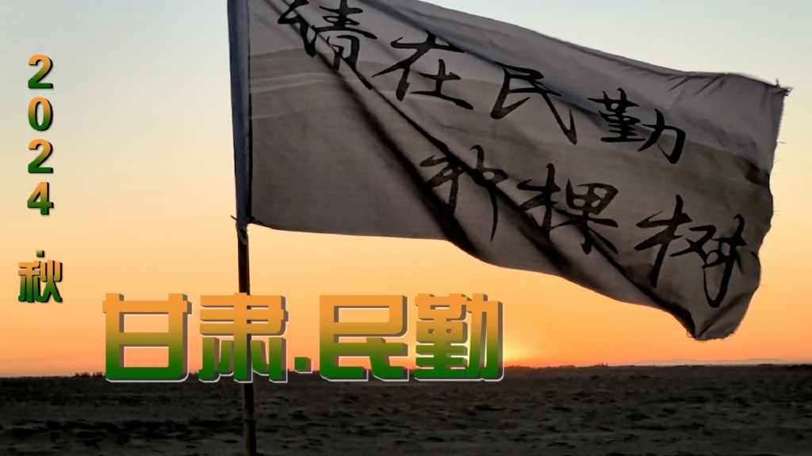
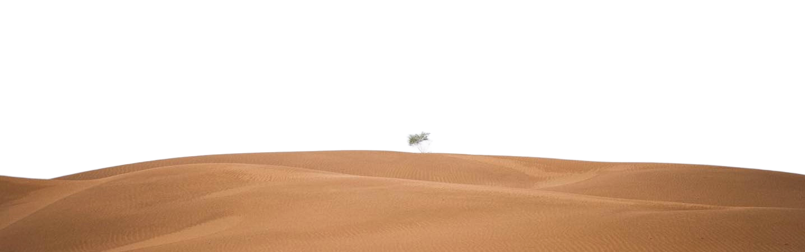

“Please plant a tree in Minqin”——Let Minqin not become the second “Lop Nur”
The "love for mountains and seas" of contemporary young people
Minqin County, Wuwei City, held an event called "Please Plant a Tree in Minqin",
which attracted tourists, college students,
young volunteers and local residents from all over the country to participate.
Minqin County is surrounded by the Tengger Desert and the Badain Jaran Desert on the east,
west and north. It is dry and water-scarce. It is one of the four major sources of sandstorms
and a key county for sand control in the country. Netizens from all over the country spontaneously
planted trees in Minqin, starting the "Attack the Desert" campaign, aiming to "retreat sand and
advance greenery".

The former Minqin Desert

The Minqin Desert today
A variety show and a group of young people have set off a nationwide craze for sand control.
Back to March 12, 2024, ten energetic teenagers came to Minqin during the slack season and did something crazy and exciting.
They planted 180,000 Haloxylon ammodendron trees, or perhaps 180,001 trees, with a seed buried in the hearts of all their fans.
After the show was broadcast, "Please go to Minqin to plant a tree" quickly became a hot search,
and young people swiped the screen with barrages: "It turns out that Haloxylon ammodendron can really control sand!"
"I want to check in at Minqin!" This cross-border linkage of "variety show + charity" unexpectedly ignited the ecological enthusiasm of Generation Z.


With the end of the desert tree-planting program "Let's Plant 2",
the spring afforestation work of the 2024 Desert Edge Forest Public Welfare Project of the "Million Forest Project" has also come to a successful conclusion.
More than 100 tree planters and 220 volunteers from the four project sites spent one and a half months planting 480,000 seedlings of edge forests,
afforesting an area of 7,582 acres and restoring more than 5.0546 million square meters of desertified land.
To learn more about these ten young people who are farming, please click:ten young people
Therefore, the responsibility today does not lie with others, but with us young people.
In 2013, General Secretary Xi Jinping made a clear instruction during his inspection in Gansu:
Make sure Minqin will not become the second Lop Nur! This sentence is deeply engraved in the hearts of Minqin people,
but more often, Minqin people firmly put it into action! In the long-term exploration and practice,
Minqin has accumulated rich experience in sand prevention and control, and gradually built an ecological pattern of "peripheral closure,
marginal governance, and internal development".

"Planting" this green to make the sand sea green, Minqin's ambition is not only to control sand.
With the launch of the "Sand Sea Oasis·Scenic Minqin" brand, this place is transforming from an ecological battlefield to a hot spot for tourism.
Volunteers are welcome to embark on this meaningful green journey to Minqin. Here, planting trees is not just an activity,
it is a profound experience of hope, persistence, and harmonious coexistence with nature. Of course, you can also start a unique desert travel experience here.
